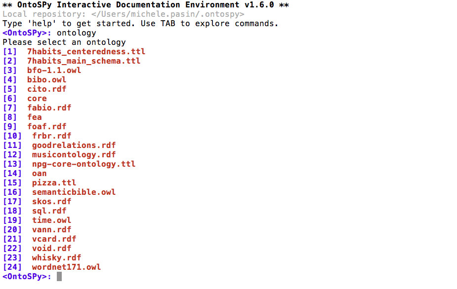

Projects / all / AI & Knowledge Graphs / Tool
Ontospy
A text-based interactive ontology browsing tool
- Years
- 2014–2026
- Status
- Active
- Role
- Design and development

Ontospy is a Python library and command-line tool for inspecting and visualizing RDF vocabularies: OWL ontologies, RDFS schemas and SKOS taxonomies.
Point it at a file, a URL or a SPARQL endpoint and you get back the classes, properties, SKOS concepts and SHACL shapes the model defines, with their hierarchies, ready to explore from Python or the terminal. It can also generate HTML documentation for an ontology, pretty much out of the box.
Install
$ pip install ontospy
Ontospy needs Python 3.10 or later. The documentation generator is included by default since version 2.0.
A quick example
Load the FOAF vocabulary and look around:
>>> import ontospy
>>> model = ontospy.Ontospy("http://xmlns.com/foaf/0.1/")
>>> len(model.all_classes), len(model.all_properties)
(15, 68)
>>> model.printClassTree()
foaf:Agent
----foaf:Group
----foaf:Organization
----foaf:Person
foaf:Document
----foaf:Image
----foaf:PersonalProfileDocument
...
From the command line
Installing Ontospy also installs the ontospy command:
ontospy scan <source>prints a report of the ontologies, classes and properties in an RDF file, URL or SPARQL endpoint.ontospy gendocs <source>generates browsable HTML or Markdown documentation.ontospy shellopens an interactive environment (like a REPL) for loading ontologies from a local library, interrogating them and caching them for quick reloading.ontospy libmanages that local library, andontospy serconverts an RDF graph to another serialization.
Generating ontology documentation
See Examples of ontology documentation generated via Ontospy, or jump straight to the sample CIDOC-CRM or FOAF documentation pages.
Status
I started Ontospy in 2014, originally as a way to get familiar with Python's RDFLib library: the post Inspecting an ontology with RDFLib has some early reflections on that. It's still maintained, mostly with bug fixes and dependency updates, and pull requests are welcome. The posts below follow its releases.
Links
Technology
- Python
- RDFLib and SPARQLWrapper
- Click for the command line interface
- Jinja2 templates for the HTML documentation